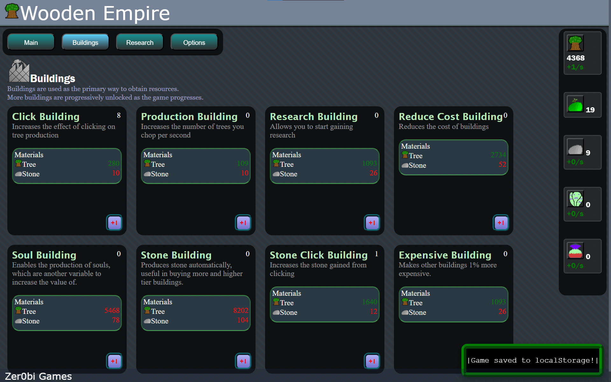
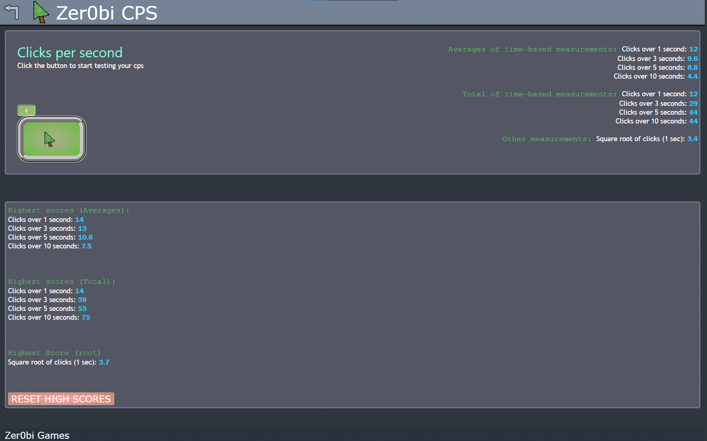
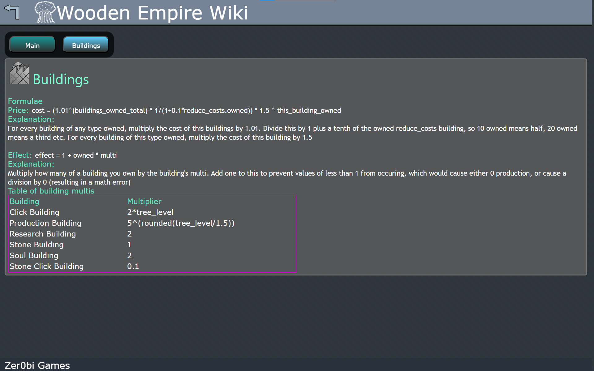

Good Morning!
Welcome to the homepage of Zer0bi Games!
This page contains all the websites, games and services created/provided by Zer0bi Games.
Welcome to the homepage of Zer0bi Games!
This page contains all the websites, games and services created/provided by Zer0bi Games.
 Wooden Empire
Wooden Empire

An incremental game made using Javascript, HTML and CSS about growing your empire of trees. Features buildings, research and more.
 CPS test
CPS test

Simple webpage that can be used to test your CPS, with multiple measurements. Also tracks the highest cps values you have achieved.
Wooden Empire Wiki

Wiki for Wooden Empire. Provides primarily formulae (with explanations) about the various elements of Wooden Empire